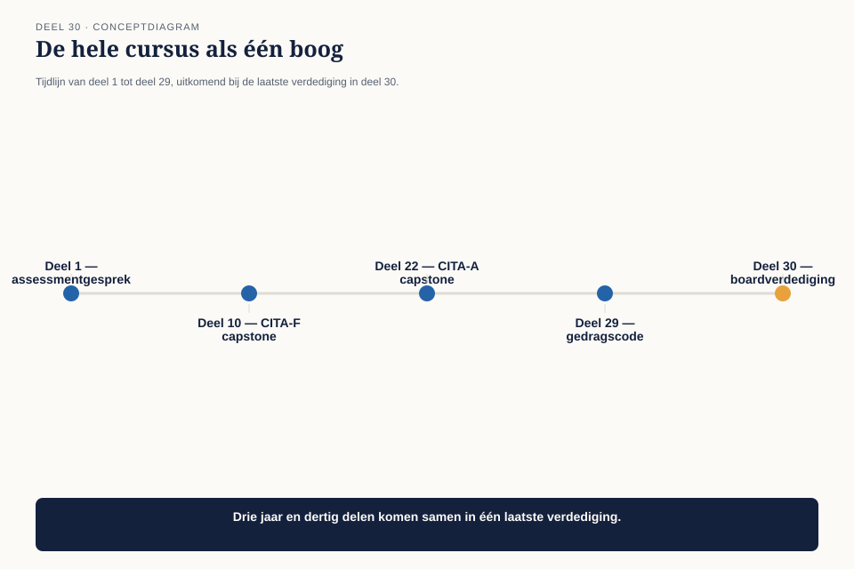
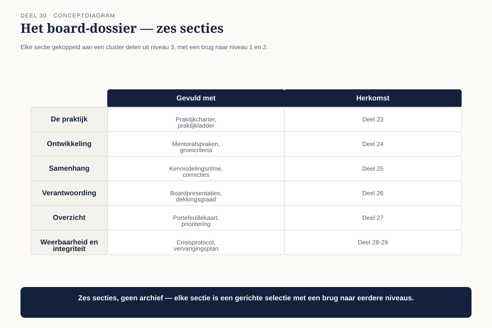
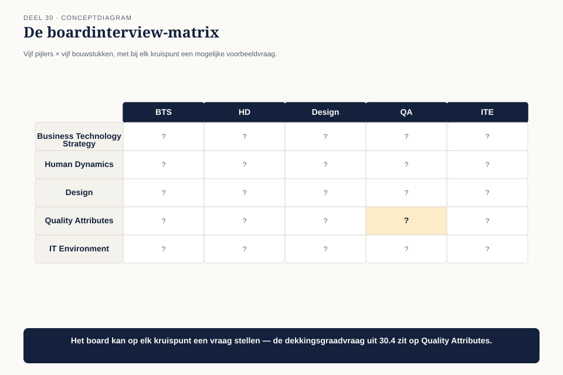
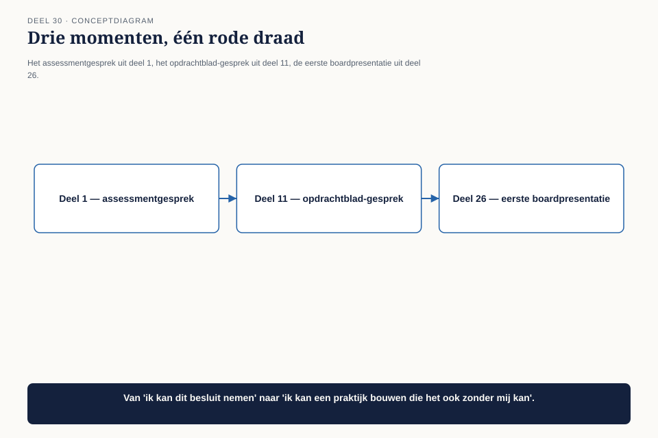

Deel 30 — Het board-dossier en de afsluitende verdediging
Niveau 3 — Board-gereedheid en praktijkleiderschap | Deelnemersreader BTABoK-cursus, Ductus
30.1 Waar dit deel over gaat
Dit is de laatste capstone van deze cursus — de afsluiting van niveau 3, en van de dertig delen die begonnen met een assessmentgesprek bij Bart Hoekstra. De vorm sluit aan bij hoe CITA-S in de praktijk wordt getoetst: een documentatiepakket, gevolgd door een boardinterview van ongeveer een uur.
Aan het eind van dit deel kun je:
- een compleet board-dossier samenstellen dat de breedte van je architectuurpraktijk aantoonbaar maakt;
- een boardinterview van een uur doorstaan, met vragen die de volle breedte van de vijf pijlers en de drie niveaus van deze cursus kunnen raken;
- je eigen ontwikkeling als architect — van individuele bijdrager tot praktijkleider — in één samenhangend verhaal navertellen.
30.2 De uitnodiging
Drie jaar nadat Claudette voor het eerst tegenover Bart Hoekstra zat — toen nog CIO, nu CTO — in het assessmentgesprek dat deze hele cursus opende, ontvangt ze een uitnodiging voor een board van Iasa Global: het formele CITA-S-interview. Bart, inmiddels haar langjarige opdrachtgever en pleitbezorger, zal niet in dit board zitten — dit is een externe toetsing, geen interne beoordeling — maar heeft haar wel voorbereid met een observatie die de kern van dit deel raakt.

“Drie jaar geleden kon je nauwelijks uitleggen waarvoor je aan tafel zat,” zegt Bart. “Vandaag ga je uitleggen hoe je een praktijk van negen architecten hebt gebouwd die een compleet pensioenstelsel heeft helpen overzetten. Het board wil niet horen wat je allemaal hebt gedaan. Het wil weten of jij, over vijf jaar, hetzelfde nog steeds zou kunnen navertellen.”
30.3 Het board-dossier: breedte, niet volledigheid
De eerste competentie herhaalt, voor de laatste keer in deze cursus, een discipline die vanaf deel 10 is opgebouwd: het dossier is een gerichte selectie, geen archief.

| Sectie | Gevuld met | Herkomst |
|---|---|---|
| De praktijk | praktijkcharter, praktijkladder | deel 23 |
| Ontwikkeling | mentorafspraken, groeicriteria van minstens twee architecten | deel 24 |
| Samenhang | kennisdelingsritme, praktijkbrede correcties | deel 25 |
| Verantwoording | boardpresentaties, de dekkingsgraad-analogie | deel 26 |
| Overzicht | portefeuillekaart, prioriteringsbesluiten | deel 27 |
| Weerbaarheid en integriteit | crisisprotocol, vervangingsplan, het go/no-go-advies | deel 28-29 |
Bij elke sectie hoort één brugzin naar niveau 1 of 2 — niet om te bewijzen dat de stof is doorlopen, maar om te laten zien dat de praktijk van vandaag rechtstreeks voortkomt uit instrumenten die ooit voor één besluit zijn geleerd. Het besluitenlogboek uit deel 7, ooit voor één architect, is nu het fundament van het gedeelde register waarop negen architecten en vijf werkstromen draaien.
30.4 Het boardinterview: breedte in plaats van diepte
De tweede competentie bereidt voor op het format zelf. Waar het CITA-A-scenario uit deel 22 diepte toetste binnen één specialisatie, toetst het CITA-S/P-boardinterview breedte: het board kan een vraag stellen over elk van de vijf pijlers, elk van de vijf bouwstukken, en verwacht een antwoord dat laat zien hoe de kandidaat ze met elkaar verbindt.

Voorbeeldvraag: “U heeft een architectuur-dekkingsgraad van tweeënzeventig procent aan de raad gerapporteerd en om uitstel gevraagd. Stel dat de raad had geweigerd, en de externe communicatie was toch doorgegaan. Wat had u gedaan?”
Dit is geen vraag met één correct antwoord — het board test of de kandidaat onder druk teruggrijpt op de instrumenten uit de hele cursus: het afwegingskader uit deel 29, de gedragscode-canon uit deel 1, en de vraag wie in zo’n situatie welk mandaat heeft (deel 9, kaders versus ontwerp — uiteindelijk beslist de raad, niet de architect, en de architect moet daarmee kunnen leven zonder de eigen integriteit op te geven).
De vaardigheid die dit toetst, is niet paraatheid van feiten maar de reflex om onder druk terug te grijpen op een consistent instrumentarium — precies wat deze dertig delen hebben opgebouwd.
30.5 Het ene verhaal: van individuele bijdrager tot praktijkleider
De derde competentie is de synthese van de hele cursus: kun je je eigen ontwikkeling — niet je projecten, je ontwikkeling — navertellen als één samenhangend verhaal?

De rode draad die door alle drie niveaus loopt: van “ik kan dit besluit nemen” (niveau 1), naar “ik kan deze dienst aanbieden en verantwoorden” (niveau 2), naar “ik kan een praktijk bouwen die dit blijvend kan, ook zonder mij” (niveau 3). Dat laatste punt — ook zonder mij — is precies waar het vervangingsplan uit deel 28 en de praktijkladder uit deel 23 samenkomen: een praktijkleider die onmisbaar is gebleven, heeft niet geslaagd in de kern van deze laatste opgave.
Claudette’s antwoord op de laatste vraag van het board — “Wat is uw grootste bijdrage aan Meridiaan geweest?” — is niet de Wtp-overgang zelf, maar de praktijk die hem droeg: “Dat ik, drie jaar geleden, niet wist waarvoor ik aan tafel zat, en dat er nu negen mensen zijn die dat wel weten — en die het ook nog navertellen als ik er niet ben.”
30.6 De verdediging
Het boardinterview duurt achtenvijftig minuten. Het board — drie ervaren architecten van buiten Meridiaan — stelt vragen die kriskras door de dertig delen van deze cursus heen springen: een vraag over de klantreiskaart uit deel 12, gevolgd door een vraag over het prioriteringskader uit deel 27, gevolgd door de vraag uit 30.4 over de dekkingsgraad. Claudette beantwoordt ze niet uit het hoofd geleerde feiten, maar door telkens terug te grijpen op hetzelfde kleine aantal onderliggende principes: een getal in plaats van een gevoel, een expliciet heroverwegingsmoment, de vraag wiens belang hier weegt, en de erkenning dat een goede architectuurpraktijk zichzelf overbodig maakt voor wie hem heeft opgebouwd.
30.7 Kernbegrippen
| Begrip | Betekenis in deze cursus |
|---|---|
| Board-dossier | zes secties uit niveau 3, elk met een expliciete brug naar het instrument waaruit het is ontstaan in niveau 1 of 2 |
| Breedte in plaats van diepte | het CITA-S/P-boardinterview toetst of de kandidaat pijlers en bouwstukken met elkaar verbindt, niet losse feitenkennis |
| De rode draad van drie niveaus | van eigen besluit, naar eigen dienst, naar een praktijk die blijft bestaan ook zonder de bouwer ervan |
30.8 Tot besluit
Deze cursus begon met een architect die niet kon uitleggen waarvoor ze aan tafel zat. Hij eindigt met een praktijk die dat wel kan — niet omdat één persoon perfect werd, maar omdat een klein aantal instrumenten, consequent toegepast en telkens opnieuw uitgelegd, een gewoonte werd die groter is dan de mensen die hem begonnen.
Dat is, uiteindelijk, waar architectuur als vak om draait: niet de systemen die je bouwt, maar of de manier waarop je ze bouwt, overdraagbaar is aan wie na je komt.